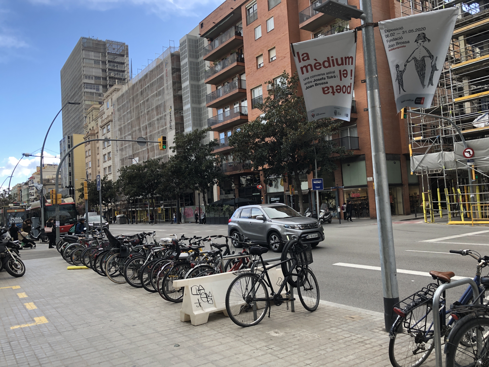

Living in Barcelona
大学生活って学生生活の中でも格別な時間ですよね。
新しい仲間との出会いがあったり、部活動に打ち込んだり、人生最後の青春ですよね。
学校とか取る授業にもよりますが、高校や大学受験とは比にならないぐらい楽な場合も少ないかと笑
日本と海外で大学生活はどれくらい違うのか。差は歴然としてました。
もしくは、僕の学力が低いだけだったのかもしれません笑
You have to study, otherwise....

Commute Time
通学時間
ここでは通学時間とか朝のルーティンとかから説明して行こうと思います。
これはバルセロナにある大学の1つの例なんで、全部の大学に当てはまる情報ではないのでお願いします。
大学名にバルセロナって入ってるんですけど、市内から電車で40分ぐらいの山の中にある大学でした。
Placa CatalunyaかGraciaから特急みたいな電車で一本で行けたんですけど、この電車が決まった時間に来たことがないんですよ。
そもそも時刻表の概念ないんで、時間通りとかないですね笑 何回も遅刻しかけました。
僕はGracia(写真右下の黄色の工事してるとこの地下)使ってたんですけど、
家からバスで10分ぐらいのとこだったんで、帰りは歩いて帰ったりしてました。
バルセロナでは定期券が下の写真みたいな紙で、3ヶ月同じの使わないとダメなんで、すぐにボロボロなるんですよ。
なので改札機が読み込まなくて駅から出れない生徒もけっこういました笑
大学の駅には駅員がいないんで、普通にみんな改札飛び越えたりしてました。僕もしてました笑


University Life Style in Barcelona
バルセロナの大学風景
大学自体はそんなに綺麗ではなかったです。日本でいったら公立大学みたいな感じです。
教室は日本の大学みたいな大教室みたいなのはなくて、50人規模ぐらいの中教室がほとんどです。
大学施設内でタバコ吸ってOKだったんで、みんなバカバカ吸ってました。まぁ別に吸うんはいいんですけど、
普通にポイ捨てしおるんですよね。日本は環境問題に対する意識が低いとか言われますけど、国じゃなくて人によりますよね。
カフェテリアは何個かあったんですけど、全部で普通にアルコール売ってました。料理の値段は普通にしますけど、美味しくなかったです笑
初日だけカフェテリアで買って、それ以降は自分で作って持って行ってました笑
それ以外には、大学内に銀行とか美容室もありました。大学内のサロンなんか絶対行きたくないですけどね笑
ジムもあったんですけど、月35€でなかなかの値段しました。ヨーロッパからの留学生なら20€とかいう意味分からん料金システムでした。
このヨーロッパ留学生用の料金システムが何個かあって、語学学校も1学期で1万円ぐらい差がありました。
これもEUの決まりか何かだったのかなって思います。
最後に、何故か学部によって授業時間が違うかったです。僕の学部は90分でビジネスは120分だったんでビジネスのクラスを取れなかったです。
お昼休憩みたいな時間がなかったので、空きコマでランチするしかなかったですね。
What I Studied
履修科目
正直言って大学生活は全然楽しくなかったです。課題は多いし、授業内容には興味持てなかったです。
授業の種類は日本の大学との単位交換を考慮する必要があったので仕方なく選びました。できればITとか国際関係取りたかったです。

僕が取ったのは主に文法学とか文学（上の中から3つ）でした。一番おもんないやつです笑 教授からの質問がおかしいんですよ。
例えば、"It is difficult to,,,,"って文があったら最初の"It"は何で主語なのでしょう？
知らん！！通じたらどうでもいい笑
"It"が主語になれる理由は7つあります。
7個もあんの！？ そんな量の理由いる？
関西人がバルセロナの大学で1人ツッコんでました笑
ディスカッションの話題がこういうのばっかりで、日本の大学よりも参加度を重視されるので参加してるふりはしてました。
他は発音の授業とかもありました。発音練習じゃなくて、何でこの音が出るのか？とかです。
ゴリゴリのスペイン人教授が英語の発音について語ってました。発音上手いんかなぁって思ったら、思い行きり巻き舌でした笑
テストの内容が出された単語に発音記号で答えるっていう謎すぎる授業でした笑
もう一個授業取ってたんで、軽く紹介しますね。せっかくなんで笑
最後の授業は、文学の歴史についてです。これはまだ興味持てました。でも教授のクセが強すぎて無理でしたね笑
スペイン語なまりと滑舌の悪さとむせる回数の多さで何語なのかも分からなかったです笑 死にかけてました。
まぁこんな感じで授業よりも、早く家に帰ってみんなでご飯食べに行くことが楽しみでした。
大学2回生でも分かる授業選びに失敗しました笑
Class Atmosphere
クラスの雰囲気
まず授業の難易度にびっくりしました。違うページにも書いてるんですけど、早慶と同じレベルって知らなかったんで笑
それに現地の学生は1回生の頃から専門科目として授業を受けていたので、差はあって当然だったと思います。
でも現地学生の授業への参加度は凄かったです。当たり前なことなんですけど、分からないことがあれば手をあげて発言してました。
それ以外にも各自で授業の予習をしてきて、教授に対してその説明は間違えてると思いますとか行ってました。
ビジネスとかコンピューターサイエンス系のクラスでこの会話が出るのは分かるんですけど、
英語の文法とか発音の授業で、このディスカッションが急に始まるっていうのはあんまり理解できなかったです笑
こんな感じのディスカッションが急に始まるのに何故か授業スピードがめちゃくちゃ早いんです。
PDFは授業前にダウンロードしておくんですけど、授業中にしか教授が言わないこととかもあるんで、
それを板書するのに必死でした。板書してる間に次のトピックに移動してて、運悪く教授に当てられるみたいなことがよくありました。
その時に前のトピックの説明が分からないとか聞けたんでよかったですけど。
6ヶ月間の中で授業中に寝てる生徒を見たことがなかったです。僕自身は授業に着いていくのに必死で眠いってならなくなってました笑
インスタのストーリーで大学の知り合いが、授業で生徒ほとんどが寝てる動画をあげてるのを見て、こんなちゃうねんなぁと思ってました笑
課題の量も半端なかったです。明後日の授業までに50ページ読んできて、それについてテストするでって急に言われるんですよ笑
その日の授業の復習と予習もしないとクラスについていけなかったんで、毎日3-4時間は勉強してました。
Summary
まとめ
日本と海外で大学にいく目的が違うので、授業への取り組み方に違いがあるのは当然なことだと思います。
僕がバルセロナの大学生活で感じたことは、自分が興味あること勉強しよってことです笑
もし僕が履修した科目がビジネスとかコンピューターサイエンスだったら苦痛ではなかったかもしれません。
とりあえず、海外の学生は授業への意欲が強く、教授はユニーク（クセが強い）人が多かったです。
僕の経験が少しでも皆さんのイメージに繋がれば嬉しいです。
一緒に頑張りましょう。